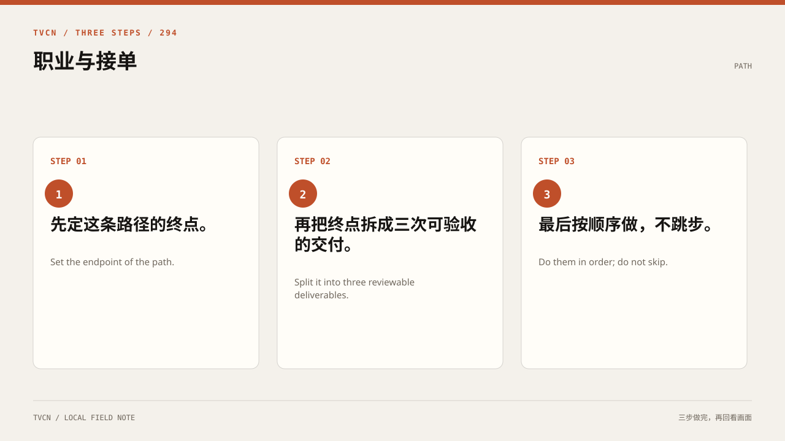

先修要求
先准备：1–3 条你能公开的片子、一份你实际做过的角色说明、一个你想接的目标客户类型、一个你能接受的最低报价。
这条路怎么走
接单不是“什么都能做”，是让目标客户在 30 秒内看懂你能解决他的哪个具体问题。顺序：目标、作品集、showreel、报价、合同、交付、复购。
- 第 1 步：目标客户：不要写“品牌方”或“所有企业”。写“本地咖啡店老板，需要每月三条竖屏短视频，但没有拍摄时间”。再写三个具体问题：没有脚本、不会出镜、不知道怎么投。目标越具体，作品集越容易选。 产出：一个客户画像 + 三个问题。
- 第 2 步：作品集：作品集不是作品堆，是三条“我能解决这个问题”的证据。每条写：客户问题、你的方案、你负责什么、结果。不能公开的片子不放；角色夸大的片子不放。 产出：3 条作品 + 3 段角色说明。
- 第 3 步：Showreel：showreel 不是预告片，是能力证明。前 10 秒放最强的一个动作，后面按能力分组：人物、产品、空间、运动。每个镜头标“摄影/剪辑/调色”，不要把所有功劳都写成自己的。 产出：一条 60 秒 showreel；一页角色说明。
- 第 4 步：报价：报价不是报一个总数，是让客户知道钱花在哪。人天写清几个人几天；器材写租还是自带；后期写剪辑、调色、字幕、混音；授权写使用范围、期限、平台。修改次数写数字，不写“合理修改”。 产出：一张四项报价单；修改次数。
- 第 5 步：合同：合同至少六项：范围、版权/使用期限、付款节点、修改次数、交付格式、取消与延期。付款按 30/40/30 或 50/50；不要零定金开机。版权写清客户能用在哪、用多久、能不能二次授权。 产出：一份六项合同骨架。
- 第 6 步：交付：交付按表：文件、格式、字幕、响度、文件名、授权文件。交付邮件写清“包含什么、不包含什么、修改次数用了几次”。客户确认后归档；超出范围的新需求，另报价，不免费加。 产出：交付包；确认邮件；归档。
- 第 7 步：复购与推荐：交付后 7 天问三个问题：哪里好用、哪里不够、下一条想解决什么。不要只发“有需要找我”。给一个具体的下一次方案：节日档、产品上新、月度内容包。复购来自“你记得他的下一步”，不是群发。 产出：一次回访；一个下一次方案。
三个练习
- 练习 1：三条作品集：选 3 条最像目标客户的片子，每条写问题/方案/角色/结果。 产出：一页作品集。
- 练习 2：四项报价：给一个真实项目写人天、器材、后期、授权四项，加修改次数。 产出：一张报价单。
- 练习 3：六项合同骨架：写范围、版权、付款、修改、交付、取消六项，每项不超过三行。 产出：一页合同骨架。
DIAGRAM / Path
三步流程

交付物
- 一个客户画像和三个问题
- 3 条作品集与角色说明
- 一条 60 秒 showreel
- 一张四项报价单
- 一份六项合同骨架
- 一个交付包与确认邮件
- 一次回访与下一次方案
常见走偏
- 用“什么都能做”接单：客户记不住全能，只记得你上次解决了他哪个具体问题。
- 零定金开机：没有付款节点，客户随时可以消失。
- 无限免费修改：合同不写次数，最后一定撕破脸。
下一步
走完这条路径，回 path-distribution 用发布数据更新作品集；或者回 path-producing 把报价和排期做成可复用模板。
图片说明：本页封面、图解与步骤图是编辑示意或结构图，不是本页实测照片，也不能当作器材测试证据；AI 辅助生成的图会在图注标出。判断器材或画面，以正文的测试条件与现场记录为准。